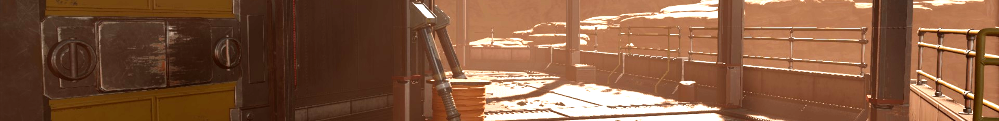
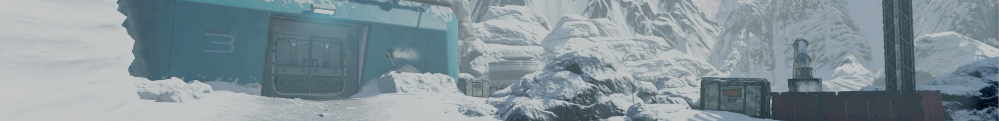

Information
Kepler is a Custom Zombies Map for Call of Duty: Black Ops 3, which is a huge project being worked on by JBird632 and Awesome Pieman. We are two of the creators of Leviathan and have released many fan favorite maps back on Call of Duty: World at War. Kepler is a futuristic map, taking place in the middle of the search for a new home for the human race. A team of explorers have found that there was no response while approaching their stationed ship. As their dropship returned back to the hanger, what they found was not a warm welcome from the crew they once knew.
Progress
04 / 03 / 17
Kepler was first started back in the beginning of Decemeber. Progress has been quite steady, though there was a point when I was becoming accustomed to my new job where the mapping portion of Kepler stalled for a bit. I am currently hard at work on finishing up one of the planets and plan to hopefully get a teaser for it out within the next few weeks.
Please keep in mind that with such a large project like Kepler, it is nearly impossible for us to give an estimate as to how long it will be until we actually release the map. My general rule for mapping has always been a minimum of 6 months; however, on our previous project "Leviathan" we spent and entire year and there 4 of us working on that. Thank you all for your patients and support, we look forward to releasing on of the best maps for Black Ops 3 zombies!
If you would like to keep up to date with everything Kepler, subscribe to my youtube channel: JBird632
Planets
|
Aion Red Desert Planet X Ozone Layer X Water X Neutral Gravity |
 |
Aion is a small but very dense planet, which is difficult to tell if it contains any life forms. The extremely high mass of the planet produces a large gravitational pull, this gives roughly double the amount of force extorted on a person compared to Earth. It is recommend that the proper safety gear is worn, as there is no breathable air and the pressure would do harm to the body.
|
Khione Ice Planet Ozone Layer Water X Neutral Gravity |
 |
Khione is the largest planet in the solar system containing a hollow core. The surface is covered in a layer of thick ice, though the planet does not contain much mass. This gives the planet approximately two thirds the gravitational force of Earth. Life possibly could be on this planet, especially with the breathable air; however, the cold makes this a difficult planet for the human race to solely live on.
|
Error Unknown Planet ? Ozone Layer ? Water ? Neutral Gravity |

|
404 Error. The information on this planet cannot be found. It is likely that our satellites have lost communication with base servers and are having issues transmitting the data. Once the servers are back online, information on this planet will be displayed.
|
Error Unknown Planet ? Ozone Layer ? Water ? Neutral Gravity |
|
404 Error. The information on this planet cannot be found. It is likely that our satellites have lost communication with base servers and are having issues transmitting the data. Once the servers are back online, information on this planet will be displayed.
Videos
Khione Teaser
This is the teaser trailer for Khione, the second planet to be shown off for Kepler.
Khione (Chee-oan) is a frozen planet, made up over majority of ice. An ozone layer exists on the planet with breathable air - though it is very cold and dry. Home to a new species of arachnid.
Update #7 | DIY Nailgun
The seventh update for Kepler showcases the DLC weapon for Black Ops 3, the DIY Nailgun.
There have been other ports of the weapon which didn't do the weapon justice. Our port is a proper projectile weapon, using the correct sounds and textures. The Nailgun also is setup as a Wall Weapon for the map; however, the positioning of all weapons, perks and other features will likely change.
Update #6 | Spacesuits
The sixth update for Kepler showcases the player models that will be used for the map. Spacesuits!
These space suit models were ripped out of Call of Duty Ghosts, but were heavily modified to better fit the map. The back of the model was completely remodeled as well as parts of the arms. The textures were redone in parts as well as replaced logos with Kepler logos to suit the map better. Player head models are still yet to be decided on at this point until we have settled on a story and character designs.
Update #5 | Custom Glock 19 Starting Pistol
The fifth update for Kepler showcases my custom Glock 19 that I modeled and textured to be the starting pistol for Kepler.
This entire process of creating the Glock 19 was recorded and can be watched here. The Glock 19 wille be replacing the traditional MR6, and is still up in the air on if I will keep the suppressor on it or not. The animations for the Glock 19 were created by Lilrifa.
Update #4 | Karma Dual Magazine SMG
The fourth update for Kepler showcases the Karma dual magazine smg from Infinite Warfare.
This weapon was ported by myself and took a bit of trickery to get the dual magazine capabilities of the weapon to work. I had to sacrifice the reload empty animations, but the gun is capable of doing a partial reload (reloading one magazine) when the gun still has more than half its ammo in its magazines, or a full reload (reloading both magazines) when the gun has less than half its ammo in its magazines.
Update #3 | EM1 Energy Weapon
The third update for Kepler showcases the EM1 energy weapon from Advanced Warfare.
This weapon was ported by myself and scripted by both Awesome Pieman and myself. To balance the weapon having infinite ammo, we decided to have it overheat in a similar fashion to the flamethrower from World at War Zombies. The HUD will display your current heat level for the weapon, and its best you keep an eye on it or else you will have to cooldown the gun until it is back down to normal.
Update #2 | Gersch Device
The second update for Kepler showcases the fan favorite wonder weapon equipment - the Gersch Device.
The model and textures for this updated Gersch Device were created by myself and I recorded the entire texturing process here.
Update #1 | Claw Powerup Drop & Metal Windows
This is the first update to Kepler in the new year. I will be showing off two new features exclusive to the map.
The Claw powerup drop will be replacing the Death Machine from the classic Black Ops 3 Zombies. The Claw was an extremely powerful and effective specialist weapon from Infinite Warfare. With the futuristic theme, metal barricades will be replacing the traditional wooden ones.
Aion Teaser
A Christmas present from JBird632 and Awesome Pieman. This video shows off our first planet for Kepler called Aion.
Aion is a small red desert planet similar to Mars; however, Aion is extremely dense and has aproximately double the gravitational pull than Earth. There doesn't seem like there are any life forms capable of living on this planet, and our search moves on to newer planets in hopes to find a suitable home for the human race.
Space Ship Teaser
This is the reveal teaser for our project Kepler. This is showing off the Laboratory to the Ship.
Kepler began as a room for the Community map, but transformed into its own full sized map. With the resources on Earth being used up at a rapid pace, its just a matter of time before we run out. We are in search of a new home, lets hope our ship and crew can find it soon.